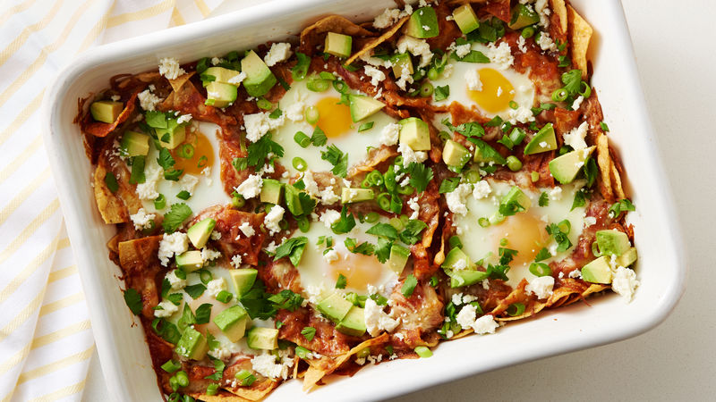

CHILAQUILES

Description:
This next recipe will show you how to make some tasty Mexican style Chilaquiles!
My mouth is watering just thinking about all the ingedients that go into making this
traditional Mexican breakfast dish.
Now I may be a bit biased because I am Mexican myself, but I think Mexican food is
the best! Especially breakfast food! Breakfast is also my favorite type of food so I
may be double biased here.
Ingredients:
- Eggs, duh! As many as you like, I usually stick to 2
- Either Red or Green salsa, not both though you heathen!
- Corn chips
- 1 Onion
- Cilantro
- 1 Avocado
- Queso fresco!
- 1 tablespoon olive oil
STEPS:
- Put table spoon of olive oil in non stick pan over medium heat
- Put corn chips in pan
- Pour salsa over chips in pan
- Put chopped onion in pan
- Cook to a simmer
- Meanwhile, in another pan cook your eggs over easy, or medium
- Once salsa and chips are simmering, serve on a plate
- Put your egg on top
- Garnish with avocado, cilantro and queso fresco!
- Enjoy!
Return to Main